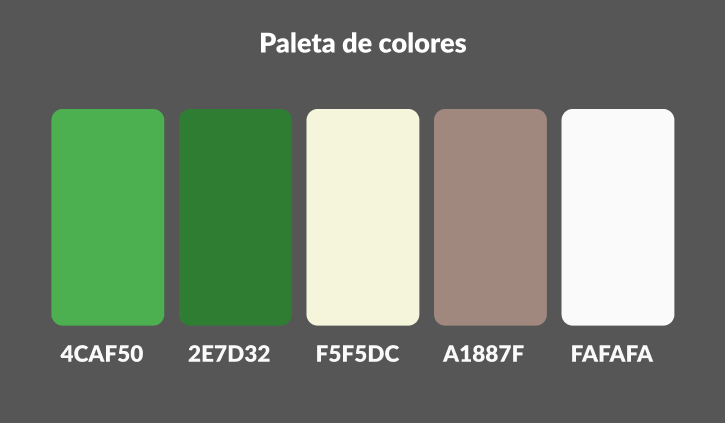

EcoFeria – Introducción y Propuesta
EcoFeria es nuestra propuesta para fomentar el consumo responsable y la concientización ambiental. Brindamos un espacio para productores locales, emprendedores sustentables y toda persona interesada en sumarse al cambio.
Nuestra actividad principal se centra en la organización de ferias itinerantes en espacios públicos, donde se ofrecen productos y servicios que promueven la sustentabilidad: desde ropa de segunda mano hasta talleres de reciclaje.
El objetivo del sitio web es informar sobre fechas y ubicaciones, permitir la inscripción a talleres y actividades, y dar visibilidad a pequeños emprendimientos sostenibles.
Basamos el diseño en una estética afín al medio ambiente, utilizando gamas de verdes y colores tierra. Buscamos una interfaz clara, accesible e intuitiva, complementada con un blog, galerías de imágenes y formularios interactivos.
Nuestro público objetivo incluye personas de todas las edades con interés en la ecología, la economía circular y el estilo de vida sustentable.
Identidad Visual
Mapa del Sitio
Prototipado
Para ver nuestro diseño interactivo hacer click en el siguiente enlace:
¡Link a nuestro Figma!Organización del Equipo
- Diseñador UX/UI: Javier Lavalle
- Maquetador: Gabriel Russo
- Programadores: Alejandro Caratti / Carlos Gobbo
- Comunicador Web: Martin Fernandez